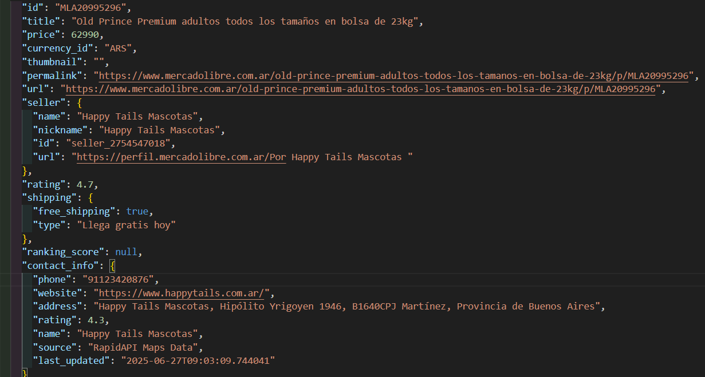
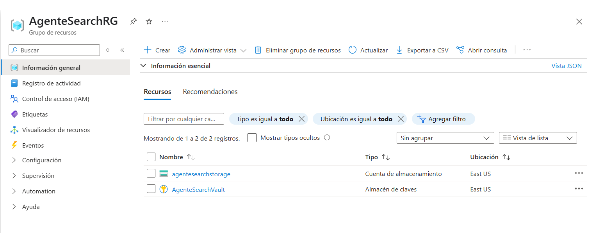

Data Acquisition & Processing Pipeline
Automatización de la recolección y procesamiento de datos para análisis avanzado

Métricas Clave
🔗 Fuentes de Datos
100+
⚡ Reducción de Tiempo
80%
🎯 Tasa de Éxito
95%
💰 Ahorro de Costos
60%
Descripción del Proyecto
Solución integral para la adquisición, limpieza y transformación de datos de múltiples fuentes. El sistema automatiza la recolección de datos, garantizando su calidad y disponibilidad para análisis posteriores.
Características Clave
🌐 Extracción de Datos
🔄 Múltiples Fuentes
- 🌍 Web Scraping Avanzado
- 🔌 Integración con APIs
- 📂 Procesamiento de Archivos
- 🔍 Búsqueda Automatizada
🛠️ Procesamiento
- 🧹 Limpieza Automática
- 🔗 Normalización de Datos
- 📊 Transformación
- 📦 Almacenamiento Eficiente
Tecnologías Utilizadas
🐍 Backend
- Python 3.9+
- BeautifulSoup
- Requests
- Tenacity
☁️ Infraestructura
- Azure Functions
- Redis Cache
- Azure Blob Storage
- Docker
🔍 APIs y Herramientas
- Google Custom Search
- Selenium
- Pandas
- NLTK
Arquitectura del Sistema
🔄 Flujo de Datos
- Extracción: Obtención de datos de múltiples fuentes
- Procesamiento: Limpieza y normalización
- Almacenamiento: Guardado estructurado
- Análisis: Procesamiento para obtener insights
Resultados Alcanzados
🎯 Impacto
- ⏱️ 80% reducción en tiempo de procesamiento
- 💰 60% ahorro en costos de API
- 📊 95% de precisión en extracción
- 🚀 100+ fuentes integradas
🏆 Logros
- 🏅 Sistema escalable y mantenible
- 📈 Mayor calidad de datos
- 🔄 Procesamiento en tiempo real
- 🌐 Compatibilidad multiplataforma
Galería

